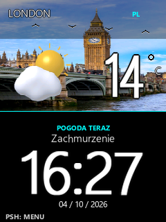
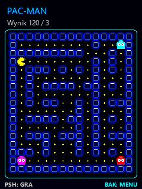

NEW / ESP32-C3 / VERSION 5.5
KORA Weather + Retro Arcade
Portrait weather station, three-day forecast, clock and classic games. Complete code, wiring, parts list and a downloadable angled 3D enclosure.
Explore & download →Gallery images are software-rendered previews.